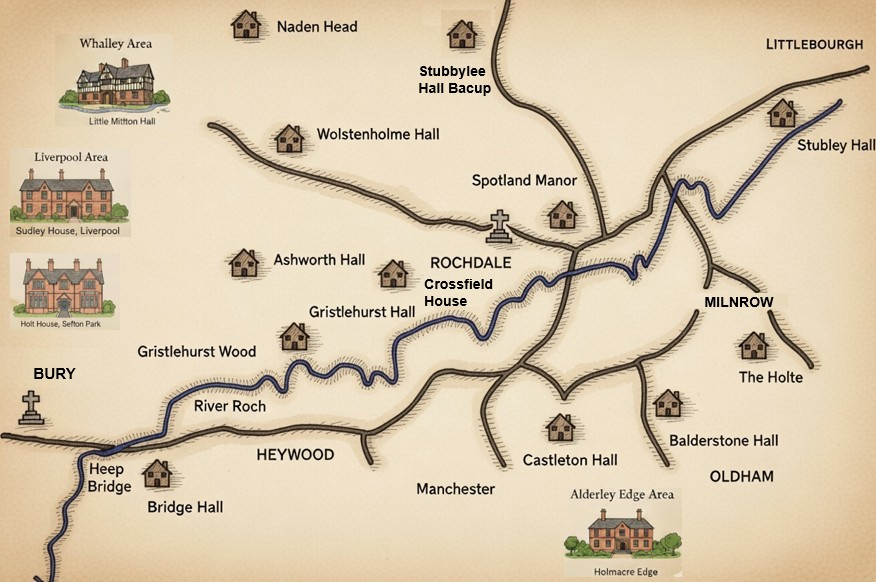
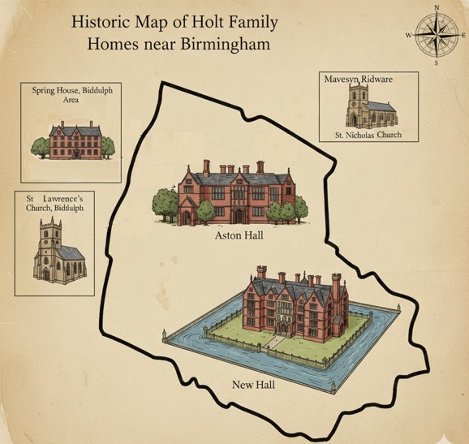

Map of Halls
This map shows the principal halls and estates associated with the Holt families in the Rochdale district. These residences reflect the family's long-standing presence in the region, from medieval tenure through to the post-Dissolution gentry era. Many of the halls were seats of minor landed families, some held by the Holts for centuries, others acquired through marriage or purchase.
The map includes key sites such as Stubley Hall, Castleton Hall, Gristlehurst Hall, and Ashworth Hall, each with its own architectural and genealogical significance. Together, they trace the shifting landscape Holt property, influence, and social standing across generations.

